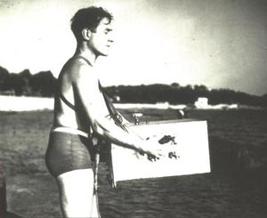
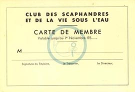

|
|
AUTONOMOUS - REG VALLINTINE
The Draeger company in Germany had already produced this highly efficient apparatus in which the diver was separate from the surface, autonomous again. It was designed to use with a helmet and boots and it had one cylinder of compressed air and one of oxygen. They were mixed together in this amazing chamber in the middle and the catalogue said confidently, “There is no way that this can fail.” It was used anywhere down to 40 metres, 1914 onwards.
We next come to a piece of apparatus that was practically unknown until very recently. Something from Japan called ‘Ohgushi’s Peerless Respirator’. Believe it or not this had a British patent dated 1918. It was a compressed air apparatus not so very much unlike, in appearance, to our aqualung. It was used by the Japanese navy, allegedly down to a depth of 300 feet, but it did need a lot of coordination. To breathe in you had to clench your teeth and breathe in through your nose and to breathe out you had to open your teeth and breathe out through your mouth. So you can imagine the effect of this if you were in the current at anything like 300 feet. But anyway it was used by the Japanese navy.
LE PRIEUR - REG VALLINTINE
COMMANDANT YVES LE PRIEUR (1885-1963)
The next great pioneer was Commandant Le Prieur in France, another French navy officer who produced a book, this Premier de Plongée.
Le Prieur had seen the Fernez equipment being used in 1925. It consisted of a lightweight apparatus with rubber goggles and a line to the surface. In 1933, he then devised with Fernez a new apparatus - an independent lung. This was called the Le Prieur - Fernez apparatus with a high pressure cylinder of air on the chest, to 150 atmospheres pressure, and an airpipe to a full face mask.
This single stage apparatus provides a regulated free-flow.

To cut down on the usage the diver had to valve air by hand to a face mask, which acts as a reservoir to even out the diver’s breathing. The flow rate is set by a spring on the membrane, which also transmits the pressure of the water, opening or closing the valve to balance a change in depth. There was a high wastage of air which free flows around the mask. The diver walked on the bottom.
L’aquarium du Trocadéro, Paris, 1935
Le Prieur produced lots of underwater apparatus including an underwater gun, using powder.
PATRICK CAZALAA FOR COCTEAU
“Mon cher Le Prieur - Votre nom symbolise cette France qui donne toujours et récolte peu. Lorsque j’étais enfant je rêvais de devenir “ingénieux”. Le suis-je devenu? Peut-être - Vous, sans l’ombre d’un doute. Car vous découvrez continuellement ce que l’avenir recouvre. Vous fouillez en quelque sorte le sol du futur. Les princes de votre royaume sont Léonard et Jules Verne.
Votre vie de poète actif illustre sous l’angle de la Science la belle phrase de Picasso “Je trouve d’abord, après je cherche”. Découvrir des trésors c’est, hélas, ainsi qu’on se ruine. Mais vous avez motorisé la roue de la Fortune qui se sauve. N’est-ce pas magnifique?”
JEAN COCTEAU (St. Jean 3 Octobre 1956)
My dear Le Prieur - Your name symbolises the France which gives much but gathers little. When I was a child I dreamed of being ‘smart’. Have I become this? Maybe - but you have without a shadow of a doubt. You always discover that which the future will cover. In some ways you are excavating the earth of the future. The princes of your realm are Leonard and Jules Verne.
Your life of active poetry illustrates, under the banner of science, Picasso’s marvellous phrase, “I find first, then I seek”. Unfortunately, discovering riches may be our downfall. However, you have put into gear the wheel of fortune which had been spinning freely. Isn’t that wonderful?
LE PRIEUR - REG VALLINTINE
In 1934 Le Prieur and Fernez carried out a series of demonstrations to the public in swimming pools and trained dozens of novices.
MICHELINE MERLE 5 years old (16th May 1936)

In the same year, with Jean Painlevé, a film producer, Le Prieur formed the first sport diving club in the World. This was initially called the ‘Club des Sous L’Eau’, but as the like sounding ‘Soulôt’ means drunkard, this was later changed to the ‘Club des Scaphandres et de la Vie Sous L’Eau’.Saint-Raphaël, Mediterranean Sea, 1935
AUTONOMOUS MASK, FINS & SNORKEL - REG VALLINTINE
Dating back to 1926 another Frenchman, de Corlieu, patented the first fins or flippers and the diver, for the first time, began to move from the vertical to swimming horizontally over the bottom.
At this time the first spear fishing clubs began. A very early one, the ‘Bottom Scratchers’, in California, but also a wonderful pioneer in the Mediterranean,
GUY GILPATRIC (1896-1940)
improbably an American, Guy Gilpatrick, who produced the first book on the sport, The Compleat Goggler. This was in the mid 1930s. Using a lot of breath holding, not apparatus this time, but producing a diving mask from a motorcycle mask with putty and lots of breath holding and spears.
It’s interesting that Guy Gilpatrick actually was the inspiration of later pioneers Hans Hass and Jacques Cousteau. They saw him in the south of France and he refers to them briefly in his book.
Soon after this an Englishman called Steve Butler, in the south of France, produced the first snorkel tube and then our basic equipment of mask, fins and snorkel tube was complete.
As far as apparatus was concerned there was one forgotten pioneer. 1937 a Frenchman, Georges Commeinhes, produced a complete aqualung as we know it today. Cylinders to 150 atmospheres, automatic demand valve. It was commissioned by the French navy and he swam down successfully to 50 metres with it in 1937 and made one mistake. He was killed in the Battle of Strasbourg in 1944 and completely forgotten.
|
|